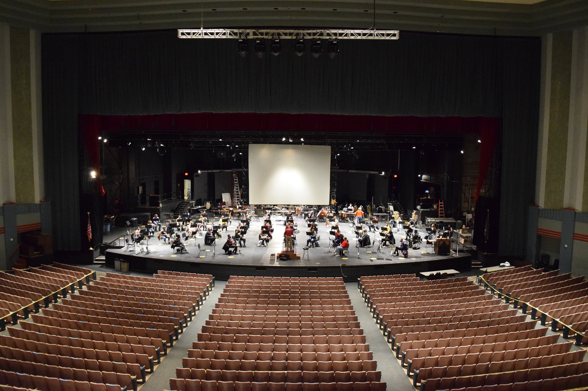
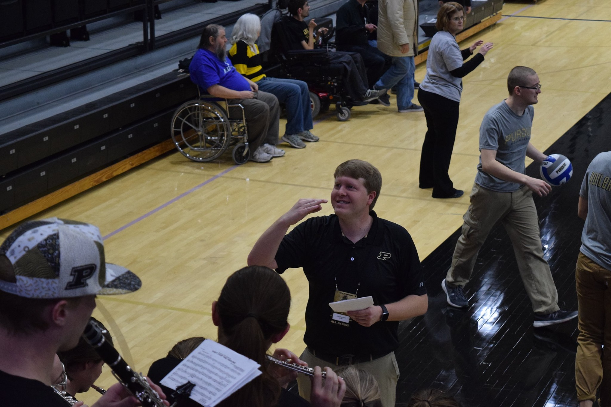
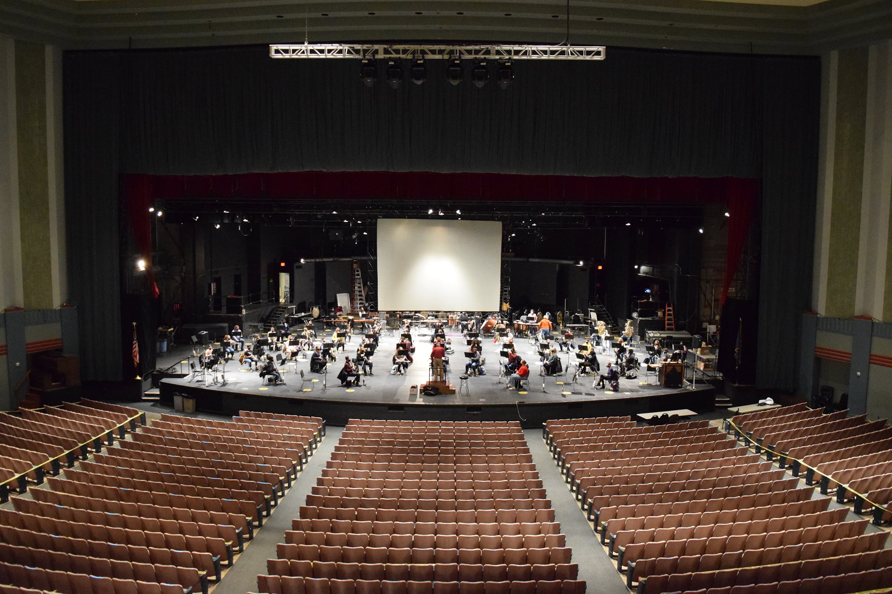
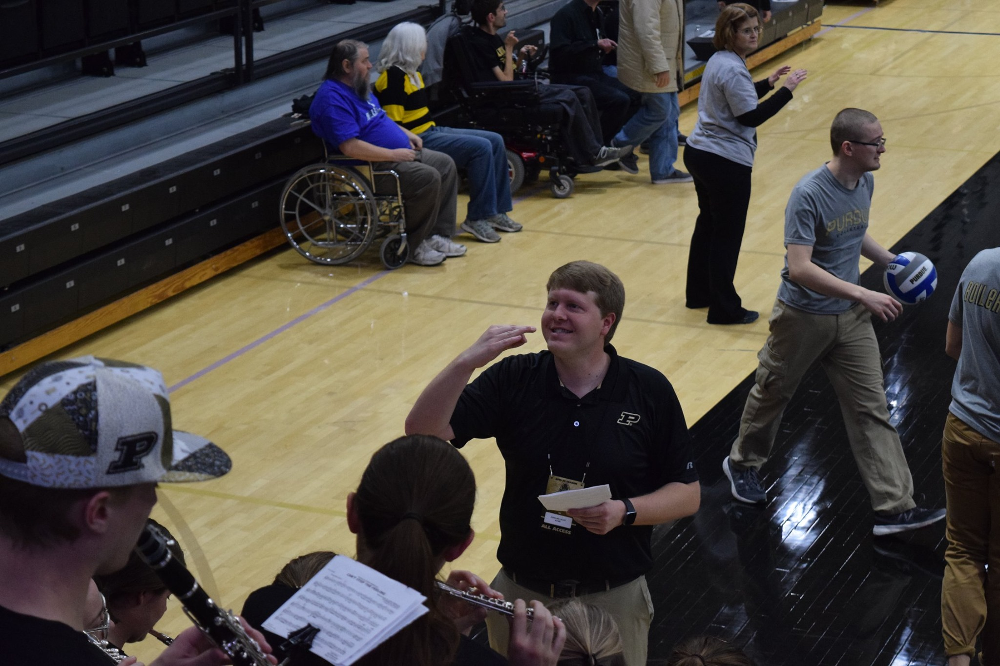

Hello world! My name is
John Williams.
And I build things for the web.
I am a self-taught developer based out of Indianapolis, currently seeking my first gig in a junior position. My focus so far has been mainly on the front-end, with some backend experience on the MERN stack. My other passions include music, education, writing and, more recently, fitness. 🏃
Hire me today 


